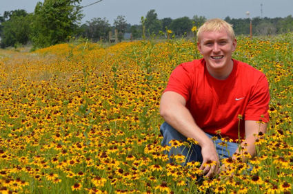
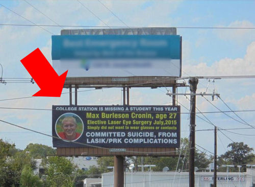

У Макса Кронина впереди была вся жизнь, полная надежд. Макс вступил в армию США и участвовал в войне в Ираке. В 2009 году, находясь на службе в Ft. Худ, Макс перенес операцию на глазу Lasik. После увольнения из армии Макс вернулся в Техас. В июле 2015 года Макс решил повторно пройти лазерную офтальмохирургию PRK, поскольку его зрение ухудшалось. Макс столкнулся с несколькими распространенными осложнениями лазерной офтальмохирургии, такими как сухость глаз, постоянная боль в глазах, ухудшение зрения, помутнение роговицы и проблемы с вождением в ночное время. Осложнения, с которыми он столкнулся, сильно повлияли на качество его жизни и не позволили ему работать и продолжать образование. В довершение всего Макс считал, что его хирург-офтальмолог был высокомерен и лишен сострадания. Макс написал несколько писем о самоубийстве, в которых заявлял, что собирается покончить с собой, потому что лазерная операция на глазу разрушила его глаза и его жизнь.
Расследование показало, что несколько пациентов, перенесших операцию Lasik, покончили с собой из-за серьезных осложнений - Денвер, 31.07.2019
Из статьи: Как выяснил репортер-расследователь Джейс Ларсон, по меньшей мере трое пациентов, перенесших операцию Lasik с тяжелыми осложнениями после рефракционной офтальмохирургии, покончили с собой. Эта новость появилась на фоне того, что индустрия Lasik утверждает, что процедура безопасна и эффективна.
Нэнси Берлесон не становится легче с каждым разом, когда она посещает могилу своего сына.
"Самое трудное - это просыпаться каждый день с осознанием того, что мне все еще приходится существовать без моего ребенка", - говорит Берлесон.
По словам матери Макса, Нэнси Л. Берлесон, доктора медицины:
Мой сын, Макс Кронин, 27 лет, покончил с собой 14.12.16, что стало прямым следствием осложнений, возникших у него после операции Lasik. Он оставил предсмертные письма, в которых сообщил об этом и подробно описал свои осложнения. Он страдал от потери зрения, постоянной боли в глазах, сухости в глазах, помутнения зрения и потери качества жизни, что привело к депрессии и самоубийству. Он не мог работать или добиваться своих жизненных целей из-за осложнений со зрением.
Как врач, я могу с уверенностью заявить, что осложнения Lasik могут привести к самоубийству.
Для плановой процедуры риски и долгосрочные осложнения занижены.
Возникающие в результате этого осложнения и ухудшение качества жизни увеличивают риск депрессии, попыток самоубийства и суицида саморазрушения.
Некролог
"Макс Берлсон Кронин. 13 января 1989 - 14 января 2016. Наш любимый Макс Берлесон Кронин покончил с собой 14.16.16 в возрасте 27 лет в результате тяжелых осложнений после плановой лазерной операции на глазу. Его семья, друзья и все, кто его знал, помнят его и скорбят о нем. Его отсутствие и потеря - это событие, которое разбивает сердце всем нам, оставшимся позади. Макс жил в Колледж-Стейшн и учился в колледже Блинн. Он мечтал поступить в университет этой осенью, чтобы получить степень инженера-нефтяника..."; Читать далее
Рекламный щит на шоссе в Брайане, штат Техас.

Отказ от ответственности: Информация, содержащаяся на этом веб-сайте, представлена с целью предупреждения людей об осложнениях процедуры LASIK перед операцией. Пациентам, у которых возникли проблемы с процедурой LASIK, следует обратиться за консультацией к врачу.